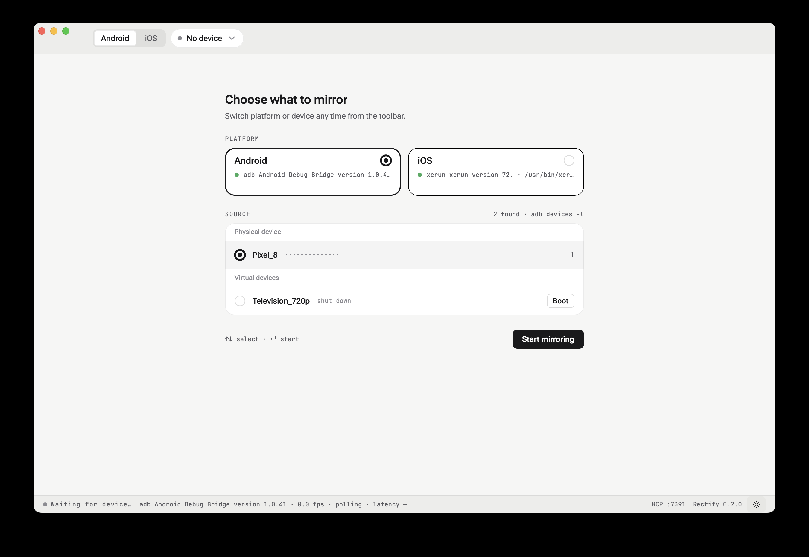

Guide
Connecting a device
Rectify polls for devices every two seconds and shows whatever it finds. There is no connect step to remember — plug something in and it appears.
The platform switch#
The toolbar's leftmost control chooses which world you are looking at: Android or iOS. Each platform has its own discovery loop, its own tool, and its own device list.
Switching platforms is a clean break. The previous platform's poll is cancelled, its device list is cleared, and any device you had selected is forgotten — a Pixel is not a thing the iOS tab can mirror, so leaving it named in the toolbar would be a lie.
| Platform | Tool | What it finds |
|---|---|---|
| Android | adb devices -l | Physical handsets and running emulators |
| Android | emulator -list-avds | Shut-down AVDs, offered with an inline Boot button |
| iOS | xcrun simctl list devices available | Simulators, booted or not |
| iOS | idb list-targets | Physical devices, if idb is installed |
The picker#
With a platform selected and something attached, the stage shows Choose what to mirror:
- Physical device — handsets and iPhones.
- Virtual devices — emulators and simulators. A shut-down one is still listed, with a Boot button beside it, so you do not have to leave Rectify to start it.
Navigate with ↑ ↓ and commit with ↵, or click. The Start mirroring button does the same thing as ↵.
Esc closes the picker — but only once you have something to go back to. Before your first selection there is nothing behind it, so Esc deliberately does nothing rather than stranding you on an empty stage.
Once a device is selected, the toolbar chip shows its name and serial. Click the chip to reopen the picker at any time.
Nothing attached#
If the tool is present but sees no device, the stage explains what to do rather than showing an empty box: plug in a phone with USB debugging on and accept the prompt, or boot an emulator from the inline selector. The footer reports what is being polled and how often.
The copy follows the selected platform. On iOS there is no USB debugging prompt and no AVD, so
it talks about simulators and xcrun simctl instead.
The mirror#
Once the stream starts the stage shows the live frame, and the status bar reports what is actually happening:
● LIVE adb Android Debug Bridge version 1.0.41 · 1080x2400 · 0.3 fps · polling · latency —
The frame rate is low on purpose. Rectify captures still frames for annotation, not video for
playback — the loop is screencap-based, and a higher rate would cost device CPU for a stream
nobody watches in motion.
Between pressing Start mirroring and the first decoded frame you get a spinner. On a cold
adb start the gap is long enough that an empty stage would read as a hang.
If the stream drops#
A device that disappears mid-session does not throw away your work. A banner appears over the now-stale frame explaining what happened, your staged annotations stay pinned to the frozen frame, and Resolve & Send keeps working — the batch is already captured, and sending it does not need the device back.

Reconnect in the banner restarts the stream.